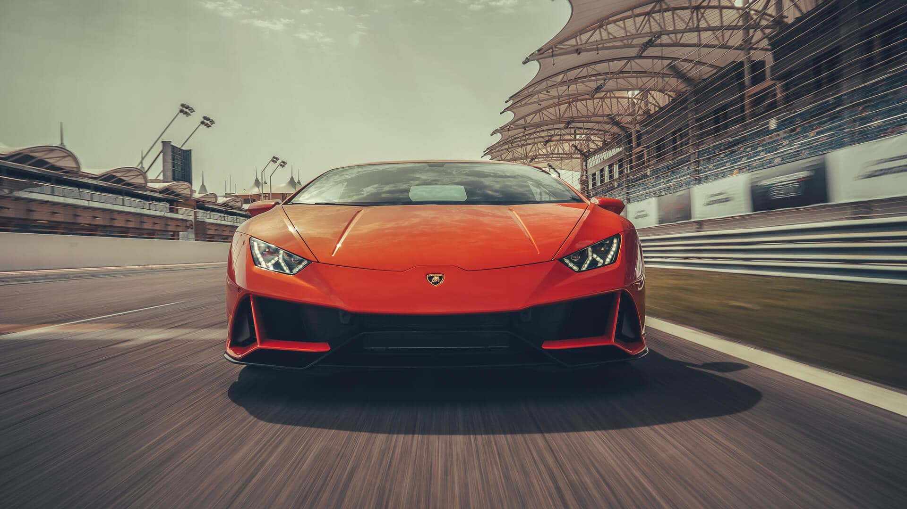
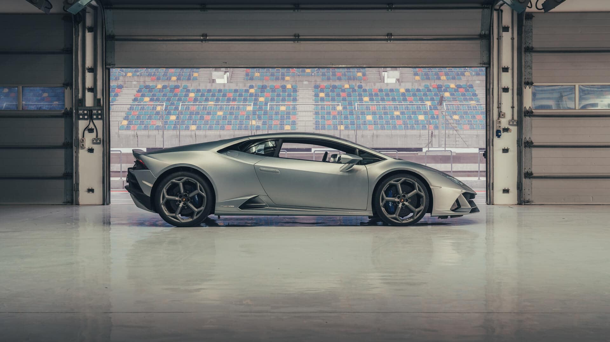

The Huracán EVO represents the natural evolution of the most successful V10 in Lamborghini history. It is the result of fine-tuning and consolidation which involves the already existing features and performance of Huracán, combined with the development of new solutions in terms of efficiency and design. But overall this vehicle stands out for its ability to anticipate the moves and satisfy the desires of the driver, in harmony with the Lamborghini DNA.

Exterior
The design of the Huracán EVO does not present a radical change in the original iconic shape and proportions, rather it represents a natural evolution that introduces sophisticated aerodynamic solutions, while remaining faithful to the iconic Lamborghini design. The front bumper adopts unmistakable Lamborghini design cues such as signature Y-shape stylistic elements, bonnet lines inspired by the Countach, skirt air ducts reminiscent of the Murciélago, and high-mounted exhaust tailpipes that recall the highest performing models of the Lamborghini range. The model also introduces the new 20” Aesir rims and debuts Ad Personam colors for the car body, including Arancio Xanto [Orange].
These elements produce an evolution projected towards the future that does not forget the past.

Interior
The interior perfectly mirrors the evolutionary design of the Huracán EVO.
The cockpit features a cutting-edge 8.4” touchscreen system built into the central tunnel, which makes it possible to control the car and entertainment functions with a tap of your fingertips. The exclusive interior finishes, stemming from authentic Italian design, are made with the finest-quality materials: the upholstery is available in leather, Alcantara and—for the first time—Carbon Skin, an innovative carbon fiber material exclusively available with Lamborghini. All these details make the on-board experience even more unique and refined.